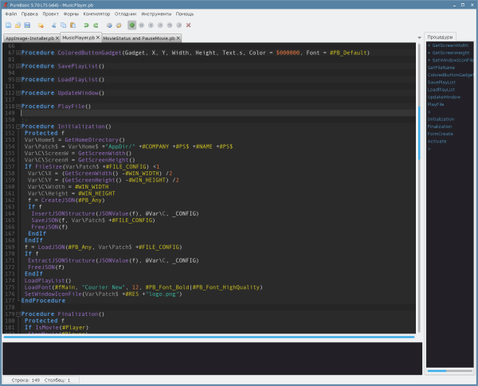

Расширение файла AppImage
AppImage — это переносимый, исполняемый файл приложения для Linux, аналог .exe в Windows
Программы в этом формате размещаются на этом сайте или найдёте их здесь appimage.github.io
Формат AppImage это система запуска приложений для Linux преследующая цели: простота в использовании, совместимость со всеми Linux, независимость от дистрибутива, запуск без установки, запуск без root прав, переносимость файла AppImage и сохранение операционной системы без изменений.
При удалении файда AppImage удаляется и само приложение. Прежде чем запустить скачанный файл AppImage необходимо сделать его исполняем.
Запускаем терминал и поочерёдно вводим следующие команды:
sudo nano /etc/apt/sources.list
Добавляем указанные 5 репозиториев в открытый файл и сохраняем его.
deb https://download.astralinux.ru/astra/stable/1.7_x86-64/repository-main/ 1.7_x86-64 main contrib non-free
deb https://download.astralinux.ru/astra/stable/1.7_x86-64/repository-update/ 1.7_x86-64 main contrib non-free
deb https://download.astralinux.ru/astra/stable/1.7_x86-64/repository-base/ 1.7_x86-64 main contrib non-free
deb https://download.astralinux.ru/astra/stable/1.7_x86-64/repository-extended/ 1.7_x86-64 main contrib non-free
deb https://mirror.yandex.ru/debian/ stretch main contrib non-free
Вставить CTRL +O; Сохранить CTRL +S; Enter; Выйти CTRL +X
sudo apt install nvidia-driver-470
sudo apt install --reinstall intel-microcode
sudo apt install ttf-mscorefonts-installer
sudo apt install ffmpeg bluefish gcolor2 fbreader doublecmd-qt neofetch htop fly-calc -y
sudo apt install qmmp clementine -y
В случае ошибки:
sudo apt-get install -f
sudo apt-get install gcc g++ libc6-dev libsdl1.2-dev libgtk-3-dev unixodbc-dev libgnome2-dev libxine2-dev libwebkitgtk-3.0-dev libxxf86vm-dev libwebkitgtk-dev libwebkitgtk-3.0-dev
Обновляем списки пакетов из репозиториев
sudo apt update
Обновляем все установленные пакеты до новых версий
sudo apt -y upgrade
Или одной командой:
sudo apt update && apt upgrade
Включаем WebRender в Firefox
about:config
gfx.webrender.all ставим на true
widget.wayland-dmabuf-vaapi ставим на true
widget.wayland-dmabuf-vaapi.enabled ставим на true
about:support
Сделать файл исполняемым для запуска можно с помощью графической оболочки.
Нажмите по файлу правой кнопкой мыши. В контекстуальном меню выберите пункт «Свойства».
Открывшееся окно должно содержать вкладку «Дискреционные атрибуты», в котором нужно активировать правый пункт «Обычные».
Теперь разрешено выполненять данный файл как программу.

Либо сделать файл исполняемым для запуска можно с помощью терминала.
chmod +x имя_файла
или
sudo chmod +x имя_файла
Создание ярлыков для исполняемых файлов и папок.

Пользоваться ей очень просто-качаем, делаем его исполняем, запускаем, при запуске указываем Appimage и икону для запуска.
После нажатия на кнопку "Создать" на рабочем столе появиться ярлык запуска программы. Сам файл Appimage будет храниться в папке "AppDir" вашего хомяка.
Скачать
Сборка пакетов DEB

Приложение необходимо для интеграции Appimage файла в систему с помощью создания DEB пакета.
Скачать

PureBasic.
Среда разработки PureBasic с помощь которой написаны эти программы
Файл Create.sh сделать исполняемым и запустить.
Установим необходимые пакеты для работы PureBasic
sudo apt install libxine2-dev libxine2-x libxine2 mesa-vdpau-drivers
Для удаления установленной программы достаточно удалить папку с именем установленной программы в папке AppDir домашнего каталога
Теперь вы знаете, как интегрировать, запустить и удалить файлы AppImage с помощью Create-Link и Create-DEB в Linux.
Удачи.